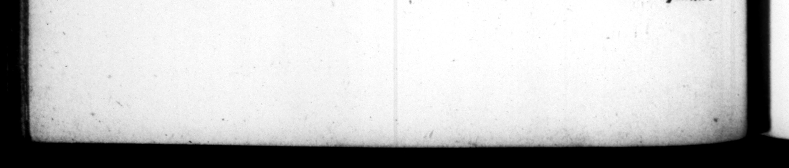

208 non prius deſtitit inſequi, quam ſpecies barbarz mul ieris humana amplior, victorem tendere ultra ſermone Latino provibniſſer, Quas ob res ovandi jus, & e menta epit : ac Port præturam Fonfeſtirs inito conſutu, atq; expeditione repetita, ſupremum diem morbo in zftivis caſtris, quæ ex eo S:clerata ſunt appellata. Corpus ejus per municipiorum colomaramq; pri mores, ſuſcipientibus obviis ſcribarum deeuriis, ad urbem devectum, fe. pultumque eſt in Mart io campo. Cæ terum exercitus honorarium ei tumulum excitavit: circa quem deinceps ſtato die quotannis miles decurreret, Galliarumq; civitates publice ſupplicarent. Prærerea fenatus inter alia complura, marmoreum arcum cum tropæeis via Appia decrevit, & Germanicl 9 ipſi poſteriſque ejus, Fuiſſe autem ereditur non minus lorioſi uam civilis animi. am ex ſte ſuper victorias, opima quoque ſpol ia captaſle , ſammoque ſzpius diſcrimine duces Germanorur\ tota acie inſectatus: nec diſſimulaſſe unquam priſtinum ſe Retp. ſtatum DR reſtituturum. ſi » Unde exiſtimo nonnullos tradere auſos, ſuſpectum eum Auguſto, revocatumque ex provincia: & quia Eunctaretur, interceptum veneno, Quod equidem magis, ne prætermitterem, retuli, quam quia verum aut verifimile putem: cum Auguſtus tantopere & vivum dilexerit, ut coheredem ſemper filiis Inſticnerir, ſicut quondam in ſenatu profeſſus et : & defangum ita pro concione Jaudaverit, ut dees precatus fir, Similes ei Cæſares [urs facerens © ſrogque Fam — obiit, f . — x * „ n p — * _ N Xx \ : x - * , * ** c. SUET. TRANG, | ] | ing the purſuit of them, til # 1 woman of more than buman appeared to him; and in tongue f orbid him be ther. For which exploits be of an ovation, and umpbal ornaments. After his fhrp, he immediately took ubm him conſulate, and returning again t P ” 5 * 7 fx? many, died in the ſummer-camp, which from thence was called the wicked camp. His corps was tranſmitted to Rome by the principal perſons of the [eweral Vorough-torons and colonys ben the road, being every where met and received by the publick ſcribes of each place, and buried in the field of Mars. The army erefted à monument in btnow of his memory, round which the foldiers uſed yearly upon a certain day to march in ſolemn proceſſion, aud perſons dl put ea Fon the /, — eſte of ry 5644 — upplications ro bu » Seſioes, 1 nate amongſt | = ot her hours, decreed for him 4 triumphal arch of marble with trophy in the Abpian way, as alſo the i nin 0 I. * 4 as looked uon a à per an aſſuming 2 fas þ called him; and becauſe be made no haft to comply with the order, took him by poiſon 5 which I mention, that 1 may not be thaught guilty of an om! on, more than becaule I think it true or probable at all, ſmce Aug ed him ſo dearly whilſt lromg, that he always in his wit's made him Joyntheir with his ſons, as he once declared in the ſenate, and upon his deceaſe extolled um in à ſpcech to the people, th that degree, that he prayed the J to make his Cæſars like him, and to grant him as honourable an exit quando TED
